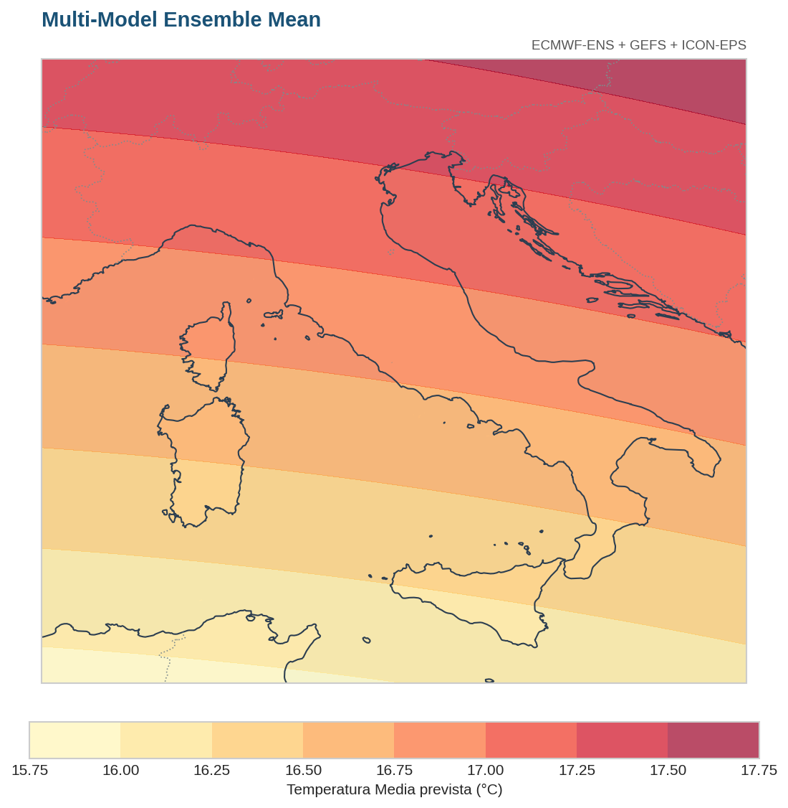
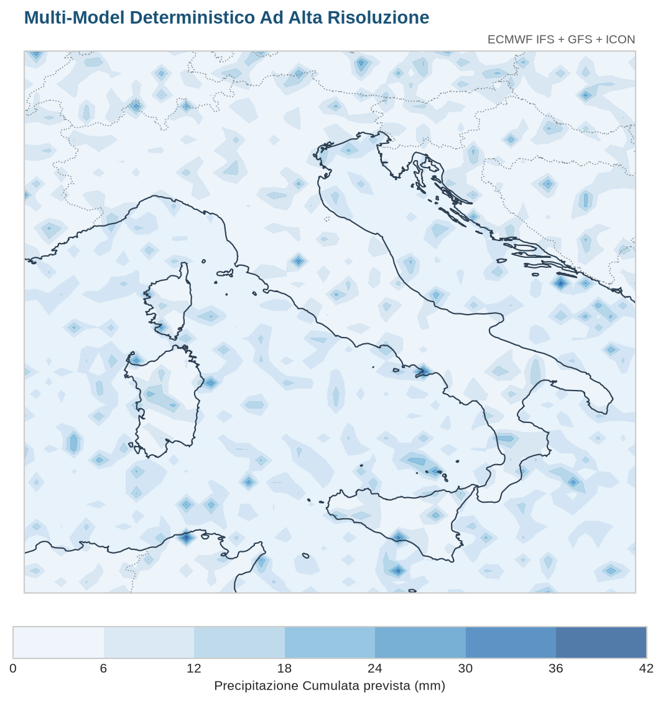
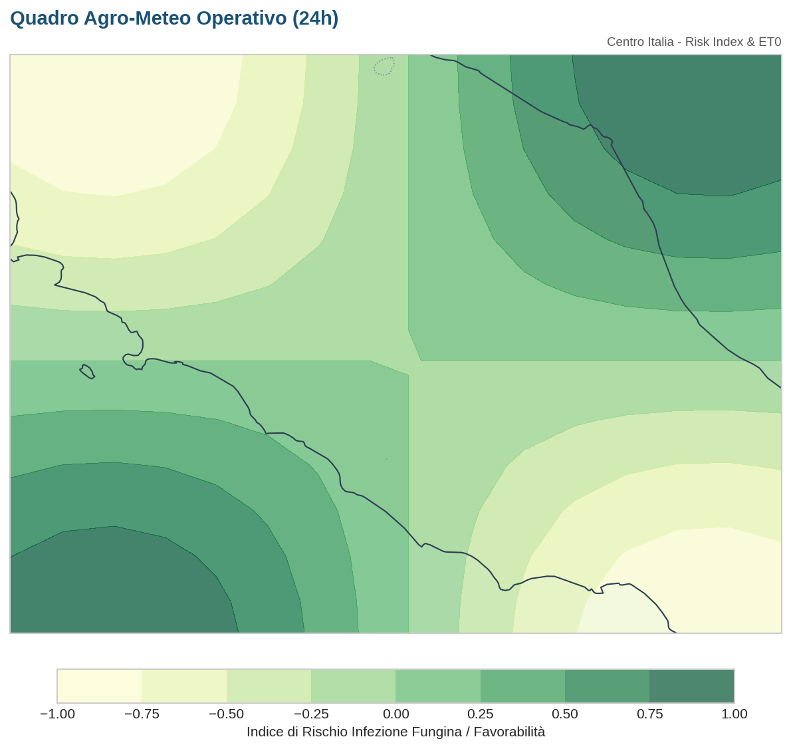
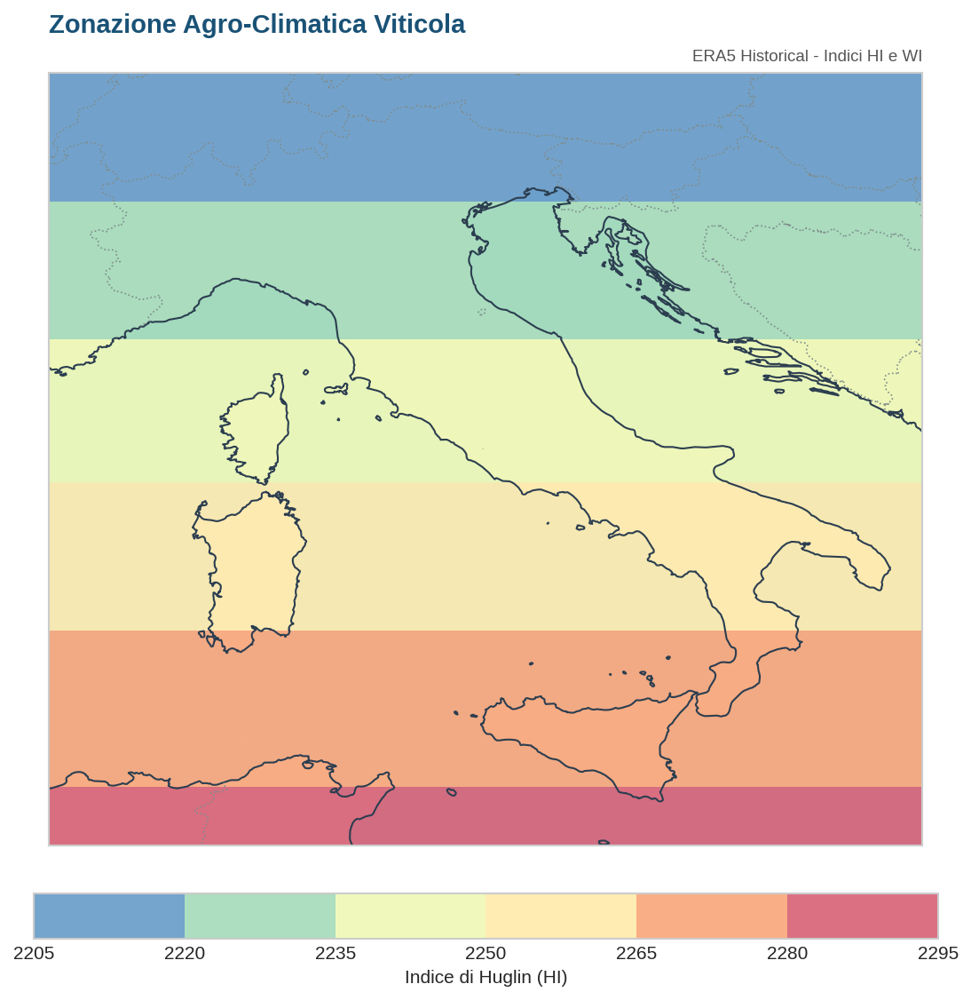

Previsioni Multi-Modello, Monitoraggio Agro-Meteo e Analisi Bioclimatica Storica ERA5

Media pesata delle simulazioni probabilistiche: 50% ECMWF-ENS, 25% GEFS, 25% ICON-EPS.

Combinazione dei principali modelli deterministici: 50% ECMWF IFS, 25% GFS, 25% ICON.

Rischio infezione fungina (Peronospora/Oidio), pioggia cumulata, Evapotraspirazione ($ET_0$) e Gradi Giorno ($GDD$).

Indici bioclimatici storici di Huglin (HI) e Winkler (WI) per la viticoltura.